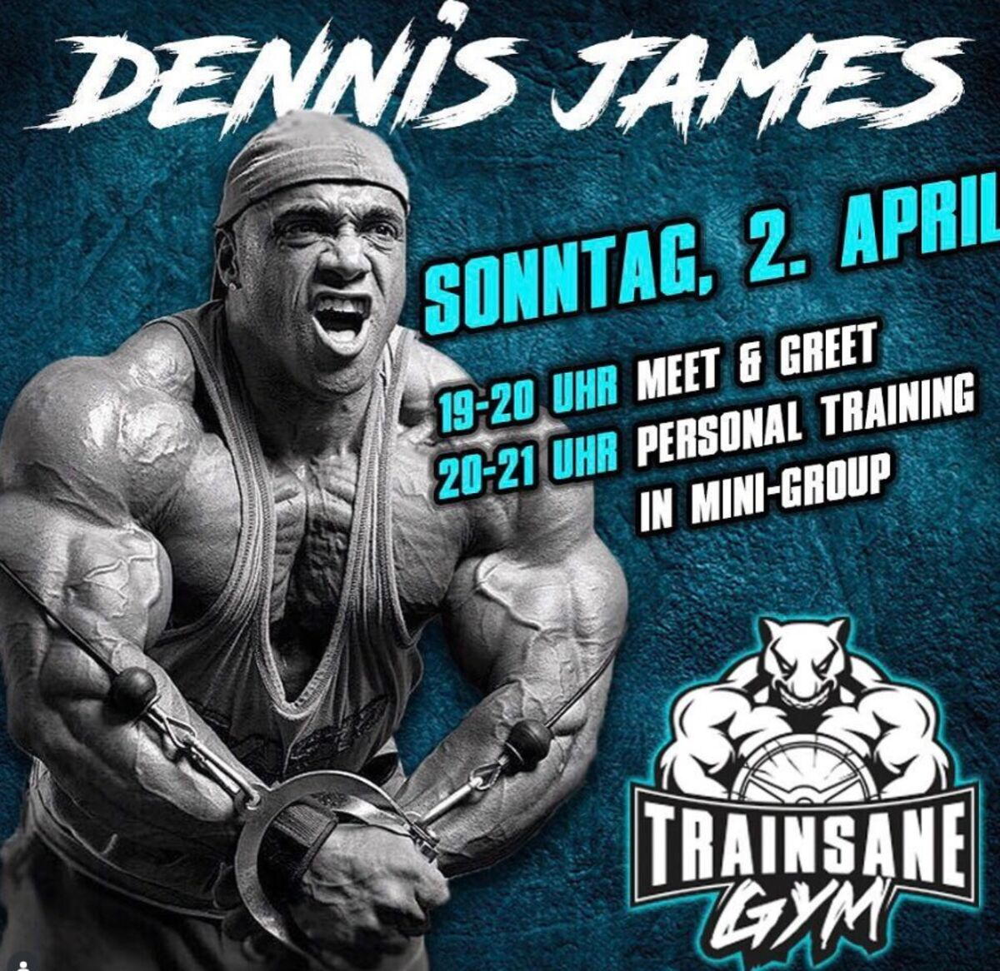
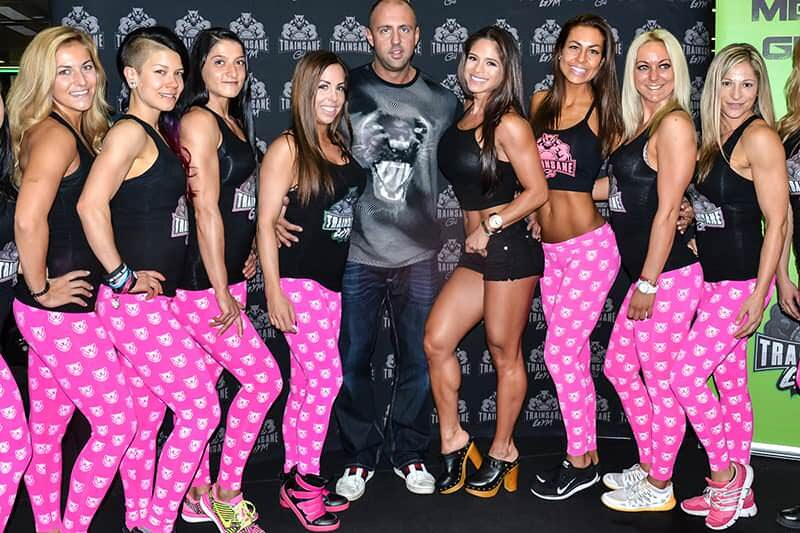
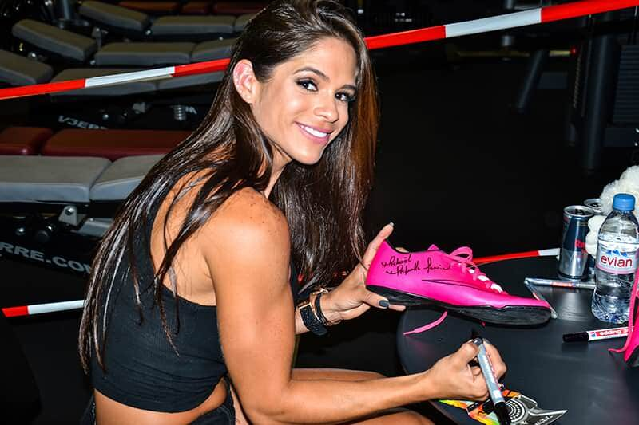

Vom legendären 24/7 Gym in Bern zum Markenuniversum mit Sub-Brands, Supplement-Linie und internationaler Community.
Ausgehend vom legendären 24/7 Gym in Bern entstand ein starkes Markenuniversum mit Sub-Brands, E-Commerce, Supplement-Linie und Community, das über die Region hinaus Strahlkraft entwickelte und TRAINSANE zu einer der prägnantesten Fitnessmarken der Schweiz machte.
Als Mitgründerin und Geschäftsführerin der TRAINSANE GmbH verantwortete ich über acht Jahre den digitalen Markenaufbau, die Marketingstrategie sowie die kreative Leitung. Durch die konsequente Maximierung der digitalen Reichweite — sowohl für das lokale Trainsane Gym als auch für den Online-Shop trainsane.ch — positionierte ich das Unternehmen als eines der beliebtesten und etabliertesten Gyms der Schweiz.
Ergebnis: Aufbau einer starken Fitnessmarke, die sowohl lokal als auch online überregionale Strahlkraft erlangte und das Trainsane Gym als feste Grösse in der Schweizer Fitnesslandschaft etablierte.
Das TRAINSANE Gym in Bern war das Herzstück der Marke — ein einzigartiges, legendäres 24/7 Gym, das weit über die Landesgrenzen hinaus bekannt wurde. Rund um das Gym entstand ein Markenökosystem, das verschiedene Lebensbereiche abdeckte und die Marke emotional auflud:
Als zusätzlicher Erfolgsbaustein wurde 2016 die Supplement-Linie TRAINSANE® aufgebaut, die bis heute über den eigenen Online-Shop trainsane.ch vertrieben wird. Das Branding zeichnete sich durch ein konsistentes visuelles Erscheinungsbild, klare Positionierung und starkes Storytelling aus.
Wir organisierten regelmässig hochkarätige Events & Meet & Greets mit internationalen Fitness-Stars — und füllten damit nicht nur das lokale Gym mit Leben, sondern aktivierten auch die Online-Community international. Zu Gast in Bern waren unter anderem:
Diese Events waren weit mehr als einfache Meet & Greets: Sie belebten das Gym durch persönlichen Austausch und spektakuläre Workshops, generierten massiven Content für Social Media und etablierten TRAINSANE als Marke, die lokale Nähe mit globaler Strahlkraft verbindet.



Durch die Zusammenarbeit mit diversen internationalen Fitness-Influencern — darunter Anita Herbert — wurde TRAINSANE auch weltweit bekannt. Ihre Beiträge, Stories und Posts erzeugten enorme Sichtbarkeit und etablierten TRAINSANE als globale Fitnessmarke, die weit über die Schweiz hinaus Aufmerksamkeit und Nachfrage erzeugte.
Ein zentraler Bestandteil der TRAINSANE-Welt war der Aufbau von Know-how und Mehrwert für die Community: über 400 Blog-Artikel sowie zahlreiche Trainingsvideos informierten und inspirierten Mitglieder und Online-Follower kontinuierlich. Heute wird dieses Angebot durch E-Books im Online-Shop laufend erweitert.
Die Video-Inhalte wurden meist eigenständig produziert oder mit Freelancern aus unserem Netzwerk umgesetzt. Sämtliche Blogs schrieb ich selbst oder gemeinsam mit unserem Coach. So wurde die Bindung zur Community gestärkt, die Online-Reichweite deutlich erhöht und TRAINSANE als vertrauenswürdige Anlaufstelle für Fitnesswissen etabliert.
Durch gezieltes Event-Sponsoring — unter anderem beim Rock & Run — stärkten wir die TRAINSANE Community auch ausserhalb des Gyms und festigten den Ruf als Fitnessmarke mit echter Nähe zur Community.
Entwicklung der „MyTrainsane"-App in Zusammenarbeit mit Virtuagym für Gym-Mitglieder und Online-Kunden — inklusive Verwaltung und Erstellung von Ernährungs- und Trainingsplänen sowie Buchungen für über 2'000 Kunden.
Ich bin offen für spannende Aufträge in Digital, Social Media, Branding, E-Commerce und mehr — let's talk.